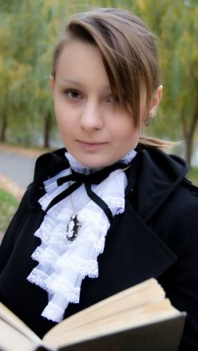

Личная страница Мэйдрил
Статус: Житель Королевства
Любимое оружие:
Eagle Longbow
История Мэйдрил
Родиной Мэйдрил Заумтор было Подземье. Семья Детей Бездны была наделена властью над нижними уровнями Астрала и славилась своими магами и врожденными способностями каждого из аристократов к общению с миром демонов. Мать семейства Викарра была молодой и родила только троих детей – Мерасту, Антгоса и Мэйдрил. Однако Мераста была убита во время нападения одного из низших домов на Дом Заумтор. Старший брат был перспективным молодым магом и в день поступления Мэйдрил в Академию он получил дар от Верховной Матери – серебряное кольцо с обсидианом. Только через несколько лет Мэйдрил узнала истинное назначение и ценность этого украшения.
Мэйдрил отличалась от своей родни уравновешенным характером, ее мало интересовала власть. Девушка не понимала причин постоянной войны между темными эльфами и «волшебным народцем», постоянных убийств и жертвоприношений кровавой богине Ллос. Поступив в Академию в восемнадцать лет юная дроу выбрала путь воина. Заклинания мало интересовали ее и она, в отличие от других членов своей семьи, старалась избегать общения с жителями иных реальностей. Серебряный Рыцарь выбрала своим основным оружием лук и тщательно оттачивала навыки стрелка. В свободное от тренировок время дроу изучала языки других рас – гномов, людей, дворфов, наземных эльфов и орков. Знание языков дало возможность изучать древние рукописи народов Фаэруна и разобраться в истинных причинах ненависти между темными эльфами и другими расами. В душе Мэйдрил все чаще понимала, что не хочет становиться частью дровского общества. Свое истинное предназначение в жизни она осознала во время первого похода в Наземный Мир в числе отряда, который возглавил ее старший брат Антгос. Красота поверхности поразила темного эльфа, девушка с интересом слушала голоса птиц, цветы и листья поражали яркостью красок и казались идеальными, как и все творения Природы. Мэйдрил почти забыла о цели вылазки – разведке и убийстве орков, разбивших лагерь в лесу. Отряд из двенадцати молодых, но хорошо обученных дроу с легкостью расправился с двадцатью орками, для которых нападение темных эльфов стало неожиданностью. Два орка попытались бежать, и через несколько секунд раскрылся смысл подарка Верховной Матери старшему сыну: юноша произнес древнее заклинание и из открывшегося в нижние слои Астрала портала появился огромный черный дракон. Голова дракона была украшена белыми костяными гребнями, из пасти вырывались языки пламени, кожистые крылья и хвост нетерпеливо били по бокам. У орков не было шансов на спасение: Антгос отдал приказ и через несколько секунд они были сожжены. Только потом из древних книг Мэйдрил узнает о том, что дракон Бельнар (дровское имя, которым себя называет само чудовище) является демоном. Обличие дракона – необходимая форма для того, чтобы выжить на низших слоях Астрала, но в нашей реальности он может находиться и в облике красивого мужчины-дроу. История не сохранила сведений о том, как именно демон стал рабом кольца. Однако существует легенда о контракте между магом-дроу из клана Детей Бездны и Бельнаром, благодаря которому Бельнар не заполучил душу воина, который смог его обхитрить, и вынужден вечно исполнять требования хозяина кольца с черным камнем. Согласно другой легенде Бельнар и был тем самым магом, который однажды убил демона, но при этом навсегда остался узником Нижнего мира. Аристократы Детей Бездны получали это кольцо как награду за достойное служение семье, и мало кто задумывался о том, кем является Бельнар на самом деле.
После возвращения в Подземье Мэйдрил решила навсегда изменить свою жизнь – вернуться на поверхность и найти приют в городе светлых эльфов, об обычаях которых она уже так много знала. Однако самостоятельно покинуть город темных эльфов было невозможно, и шанс сбежать появился во время второго патруля на Поверхности под руководством Антгоса. На этот раз отряд должен был исследовать территории вокруг земель светлых эльфов, целью был поиск недостатков в обороне владений народа, так ненавистного дровам. Молодые воины-дроу были очень осторожны – они рассредоточились группами по 2-3 воина и бесшумно прочесывали территорию леса. Антгос и Мэйдрил на языке жестов обсуждали предстоящую войну и отдалились от остальных воинов. Когда аристократы дома Заумтор поняли что происходит, было слишком поздно. Послышались крики воинов, над головой Мэйдрил пролетела стрела, а Антгос упал раненый на землю. Дроу не знала что делать, но когда поняла, что ранение брата смертельно, сняла с умирающего дроу кольцо и, прочитав древнее заклинание, вызвала Бельнара. Вертикальные зрачки янтарных глаз демона смотрели на новую хозяйку ожидая приказа. Однако приказа не последовало – устрашающий вид дракона вынудил отступить отряд светлых эльфов, и Мэйдрил получила возможность убежать.
Дроу спасла свою жизнь благодаря кольцу убитого брата, но мечты о мирной жизни в городе светлых эльфов были разрушены. Она никогда не сможет рассказать им об ужасных годах, проведенных в Академии и своей ненависти к кровавой религии Паучьей Королевы. Поэтому единственным выходом для Мэйдрил был уход из земель светлых эльфов. Жизнь в одиночестве была невероятно трудной, и девушка надеялась когда-нибудь встретить других темных эльфов, покинувших Подземье ради обретения свободы и истинной веры. Удача улыбнулась ей и в один из летних солнечных дней во время странствий в горах она услышала звук флейты и, следуя музыке, пришла в земли таких же дроу-отступников - Королевство Вэльдрин, которое стало ее настоящим домом.